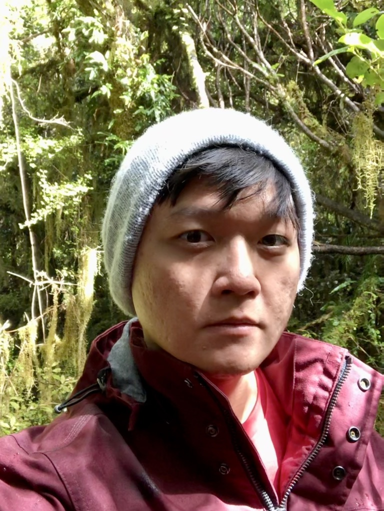

Lecture 01a – Welcome
ENVX2001 Applied Statistical Methods
Januar Harianto ![]()
Lecturer, SOLES
Feb 2026
Staff


Why Statistics Matters?
Statistics empowers you to:
- Turn raw data into meaningful insights
- Make evidence-based decisions
- Communicate findings effectively
- Solve complex real-world problems

Put in the hours
- This is a 6 credit point unit, which means that you are expected to spend 120 – 150 hours in total, including exam prep time (~10 h per week)!
- Practice makes perfect. Tutorials and Labs help you apply the concepts you learn in lectures – complete all the exercises, and practice with the bonus questions provided.